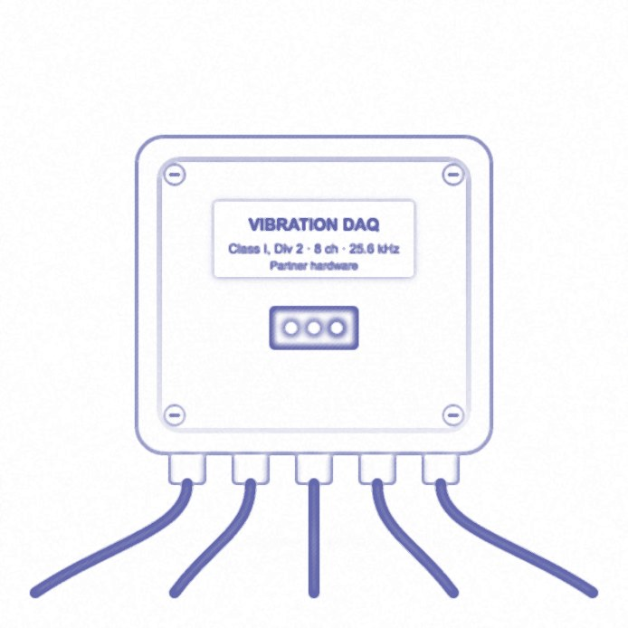

Physical AI built for deep-tech factories — battery lines, chip fabs, space hardware, robotics and autonomous systems. AgentMesh sits on the factory network beside robots, tools and test systems, puts AI on every signal they produce, and decides inside a 30-millisecond budget. Low-consequence actions happen directly; anything safety-related goes to your safety PLC, cell controller and operators.
Every AgentMesh pod comes with an operator screen: live asset signals, the decision and its lane, similar past events, the drafted work order and the nightly Kiln evidence pack — on one page.


Next-generation factories are built dense with sensors, cameras and robots, and produce far more data than people can watch. AgentMesh is built into them from day one, so every signal has something watching it.
AgentMesh reads robot controllers, servo drives and motion axes — joint current, torque, vibration and cycle data — and spots a drifting joint or gearbox before it scraps parts or stops the line.
DeepVision on NVIDIA Jetson AGX Thor at the cell, fused with electrical, acoustic, thermal and force signals. A defect is judged on everything the cell knows, not on one camera frame.
Findings land where engineers already work: MES and quality systems, test-data systems, the cell controller and the work-order system. Records arrive drafted, with the evidence attached.
Baselines are learned during ramp-up, in weeks. The same pod, playbooks and skill adapters copy to every new line and site — and AgentMesh also works with the control systems you already have.
A Sovereign Pod on the factory network keeps the fast loop local. It reads, decides and records — and leaves control where it belongs.
The Unovie Gateway reads sensors and network traffic read-only. Signal Encoders turn each window into a fingerprint.
Vector Memory checks what this looks like from history; the Unovie Decision Engine applies your rules and picks a lane.
After the event, the Unovie Reasoning Model names the likely root cause and drafts the work order.
Each night the Kiln proposes small playbook changes and keeps them only if a held-out test improves.
Only for outputs where a wrong call costs little and is easy to undo.
Anything that touches process safety. AgentMesh asks; people and safety systems decide.
Agents are starting to operate lab and factory hardware through standard device descriptions. We use the same idea the other way round: to pin down exactly what AgentMesh may read, what it may ask for, and what it may never touch.
Each asset, sensor and output gets a machine-checkable reference file: what it measures, what may be changed, which lane it belongs to and the limits that are enforced. The site's output map is built from these files, so a typo is a load error, not a lost limit.
The Evidence Log exports signed evidence bundles that verify offline — on the standby server, in your IT, or on your auditor's laptop. Change one receipt and verification fails.
Bench simulators are declared as simulated, with their gaps written down, so they can never answer for real hardware. Replaying a day's data is read-only by construction.
The assistant that explains events and drafts records reaches devices only through read tools. There is no write tool for it to misuse.
We describe devices with the open OpenMHS schemas for now, and keep our own model standard-neutral so we can add Anthropic's Model Hardware Standard when its format is published (it is a research preview today, with no public spec). Whichever standard wins, one rule holds: the description is for checking and evidence, not for an agent to drive the machine. The pod's own Gatekeeper enforces the limits, and Lane B stays a request your PLC decides. In design.
Each sector has its own page: the problems, the jobs, what AgentMesh connects to and the pilot.
In-line weld and formation QA; thermal-runaway warning on storage sites, as an alarm.
Sector page →Fab utilities and supplier plants, watched through ramp-up. IP stays on site.
Sector page →Test stands watched run by run, beside the qualified test system; quality records drafted.
Sector page →Joint and gearbox health at every cell; fleet health for systems that run offline.
Sector page →Line and yard QA, machinery health and network watch, inside your enclave.
Sector page →Balance of plant and site networks. Never on safety systems.
Sector page →Deep-tech sites can't bolt security on later, so we didn't either. AgentMesh was designed from day one against the frameworks their security and compliance teams already use.
Built around SP 800-53 Rev. 5 control families as tailored for OT by the SP 800-82r3 overlay: boundary protection (air-gapped, one-way outputs), least privilege, audit, change control, integrity and supply chain.
Govern, Map, Measure, Manage: every kit declares its context and lane, every change is tested on unseen cases, and the language model only drafts — guided by the Generative AI Profile (NIST AI 600-1).
The nightly evidence pack is material for SP 800-171 and CMMC programs, IEC 62443, fab equipment-security reviews, aerospace quality records and battery-site safety reviews. Compliance stays with your assessor; we give them the evidence.
Export-controlled, defense and IP-sensitive data stays on site, on Unovie's custom-built, high-availability hardware accelerators inside the security boundary you already maintain. Models improve on site; nothing is shared back to us.
AgentMesh is built the way modern platform teams already run software — cloud-native, on open standards — and still runs air-gapped at the machine.
Every Sovereign Pod runs a CNCF Certified Kubernetes distribution, with CNCF projects underneath. Your platform team runs it with the same tools, skills and practices as the rest of your estate — no proprietary appliance OS.
The Unovie Gateway, Signal Encoders, Vector Memory, Decision Engine, Reasoning Model, Evidence Log and Kiln each run as their own containerised service, talking over typed contracts. Each one scales, updates and rolls back on its own.
Pinned images and declarative manifests: the pod on a new line is the same as the pod on the last one. Playbooks and skill adapters ship as versioned artefacts, signed and reversible.
Default-deny network policy for every namespace, secrets encrypted at rest, sandboxed workloads — and failover handled by the Mesh Arbiter in milliseconds, not left to the scheduler.
Each kit packages the connections, fingerprints, rules, playbook and reports for one class of asset. A pod can run several.
Joint, servo, gearbox and spindle health on robots, motion axes and conveyors — with a drafted work order.
Weld, formation and aging signatures in line; thermal-runaway precursors on storage fleets, as an alarm.
Drives, tool power, inverters and switchgear: early signs of arcing and insulation failure.
DeepVision defect checks on cells, welds, wafers and composite parts, fused with process signals.
Anomaly flags to the test conductor during a run, and a drafted post-test report.
Unauthorized writes and unusual commands on the factory network, with evidence for audits.




Generic partner hardware · illustrations
Same kits, same lanes, same Evidence Log on every platform.

The reference Sovereign Pod: four servers in 3U with 2 × 10GbE networking and NVMe storage, quiet enough for a rack on the factory floor.
Robotics and DeepVision at the tool — inspection, robot cells and wafer handling in the fab.

The AI engineering lab — test stands, replay and a single-unit AgentMesh for a pilot.
AgentMesh sends what it finds to AgentNexus, where agents compare sites, plan maintenance and learn from what happened — without ever reaching back into factory control.
Turnkey Edge-AI — fixed time, fixed cost, full responsibility.